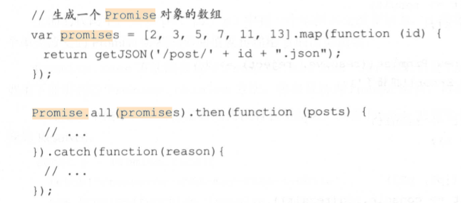

Promise
Promise
所谓 Promise，简单来说就是一个容器，里面保存着某个未来才会结束的事件（通常是一个 异步操作）的结果。从语法上来说， Promise 是一个对象，从它可以获取异步操作的消息。 Promise 提供统一的 API，各种异步操作都可以用同样的方法进行处理。
特点：
1.对象的状态不受外界影响。 Promise 对象代表一个异步操作，有 3 种状态： Pending （进 行中）、 Fulfilled （己成功）和 Rejected （己失败）。只有异步操作的结果可以决定当前是哪一种 状态，任何其他操作都无法改变这个状态。
2.－旦状态改变就不会再变，任何时候都可以得到这个结果。 Promise 对象的状态改变只 有两种可能：从 Pending 变为 Fulfilled 和从 Pending 变为 Rejected。只要这两种情况发生，状态 就凝固了，不会再变，而是一直保持这个结果，这时就称为 Resolved （己定型）。 就算改变己经 发生，再对 Promise 对象添加回调函数，也会立即得到这个结果。这与事件 CEvent）完全不同。 事件的特点是，如果错过了它，再去监昕是得不到结果的。
Promise基本用法
1 | var promise= new Promise(function(resolve, reject) { |
Promise 实例生成以后，可以用 then 方法分别指定 Resolved 状态和 Rejected 状态的回调 函数。
1 | promise.then( |
延时执行例子
1 |
|
Promise异步加载图片的例子
1 | function loadimageAsync(url){ |
Promise对象实现的AJAX操作的例子
1 | var getJSON = function(url){ |
Promise.catch()
Promise.prototype.catch 方法是 .then(null, rejection）的别名，用于指定发 生错误时的回调函数。
1 | getJSON( ’/ posts.json’).then(function(posts){ |
Promise.all()
Promise.all 方法用于将多个 Promise 实例包装成一个新的 Promise 实例。
var p = Promise.all([pl, p2 , p3]);
Promise.all 方法接受一个数组作为参数， p1 p2, p3 都是 Promise 对象的实例：如果不是， 就会先调用下面讲到的 Promise.resolve 方法， 将参数转为 Promise 实例，再进一步处理（ Promise.all 方法的参数不一定是数组， 但是必须具有 Iterator 接口，且返回的每个成员都是 Promise 实例）
p的状态由p1、p2、p3 决定， 分成两种情况
- 1.只有 p1、p2、p3的状态都变成Fulfilled, p的状态才会变成Fulfilled，此时 p1、p2、p3的返回值组成一个数组，传递给p的回调函数
- 2.只要 p1、p2、p3中有一个被 Rejected, p的状态就变成Rejected，此时第一个被Rejected的实例的返回值会传递给p的回调函数。

Promise.race()
Promise.race 方法同样是将多个 Promise 实例包装成一个新的 Promise 实例。
var p = Promise.race ([pl, p2, p3]);
上面的代码中，只要 p1,p2, p3 中有一个实例率先改变状态， p 的状态就跟着改变。那 个率先改变的 Promise 实例的返回值就传递给 p 的回调函数。
Promise.resolve()
有时需要将现有对象转为 Promise 对象， Prom工se.resolve 方法就起到这个作用。
var jsPromise = Promise.resolve($.ajax(‘／whatever.json’));
上面的代码将 jQuery 生成的 deferred 对象转为新的 Promise 对象。
Promise.resolve 等价于下面的写法。
Promise.resolve (‘foo’) ／／等价于
new Promise(resolve =>resolve (‘foo’));
Promise.resolve 方法的参数分成以下 4 种情况
参数是一个 Promise实例
如果参数是 Promise 实例 ，那么 Promise.resolve 将不做任何修改，原封不动地返回这个实例。
参数是一个 thenable 对象
thenable对象指的是具有 then 方法的对象，比如下面这个对象
1 | let thenable = { |
Promise.resolve方法会将这个对象转为 Promise 对象，然后立即执行 thenable对象的 then 方法。
1 | let pl= Promise.resolve(thenable); |
参数不是具有 then 方法的对象或根本不是对象
如果参数是一个原始值，或者是一个不具有 then 方法的对象，那么 Promise.resolve 方法返回一个新的 Promise 对象，状态为 Resolved。
1 | var p = Promise.resolve ('Hello'); |
不带有任何参数
Promise.resolve 方法允许在调用时不带有参数， 而直接返回一个 Resolved 状态的 Promise 对象。
Promise.reject()
Promise.reject(reason ）方法也会返回一个新的 Promise 实例，状态为 Rejected。
var p = Promise.reject(‘出错了’)；
／／等同于
var p =new Promise((resolve, reject) =>reject(‘出错了’));p.then(null, function (s) {
console.log(s)
});
／／ 出错了
欢迎对文章中的引用来源进行考证，欢迎指出任何有错误或不够清晰的表达。可以邮件至 1396961884@qq.com